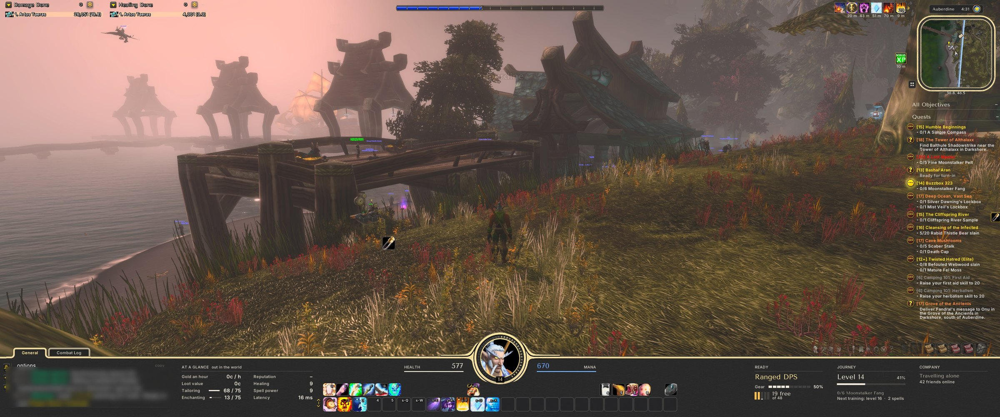
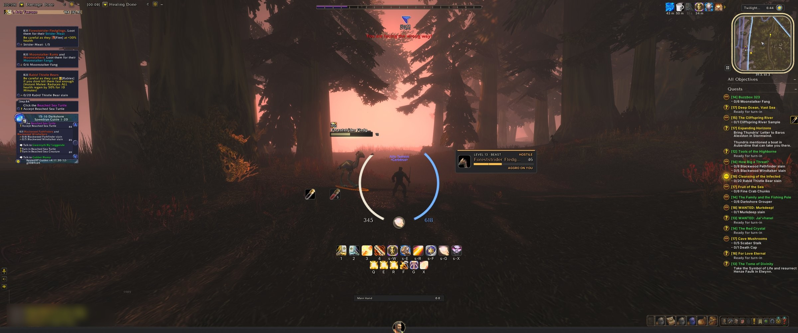
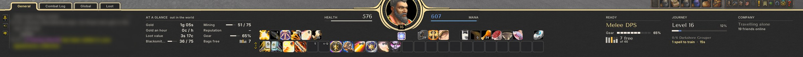
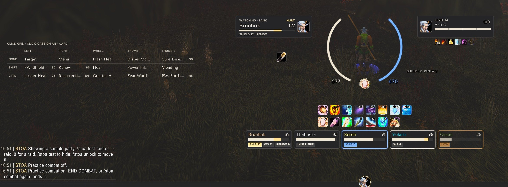
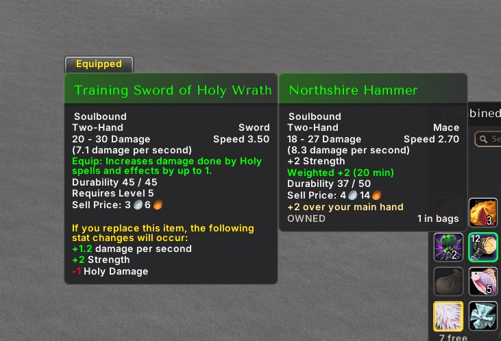
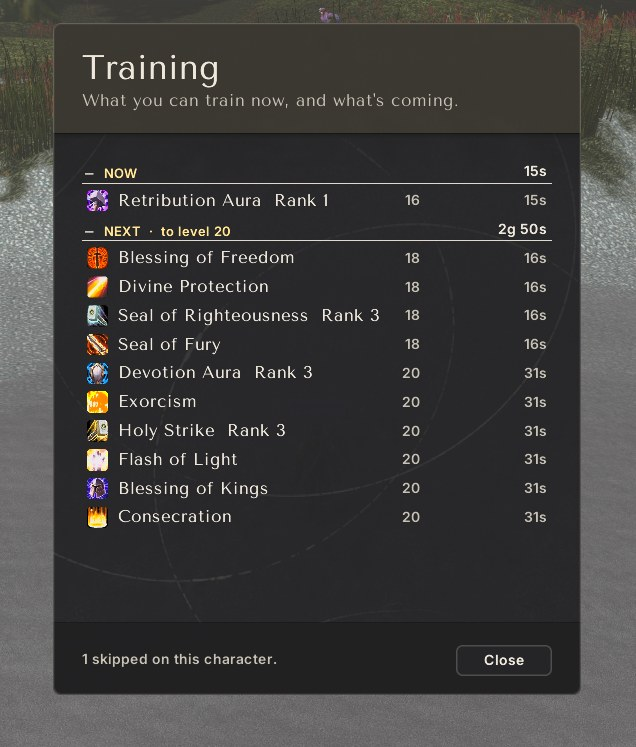
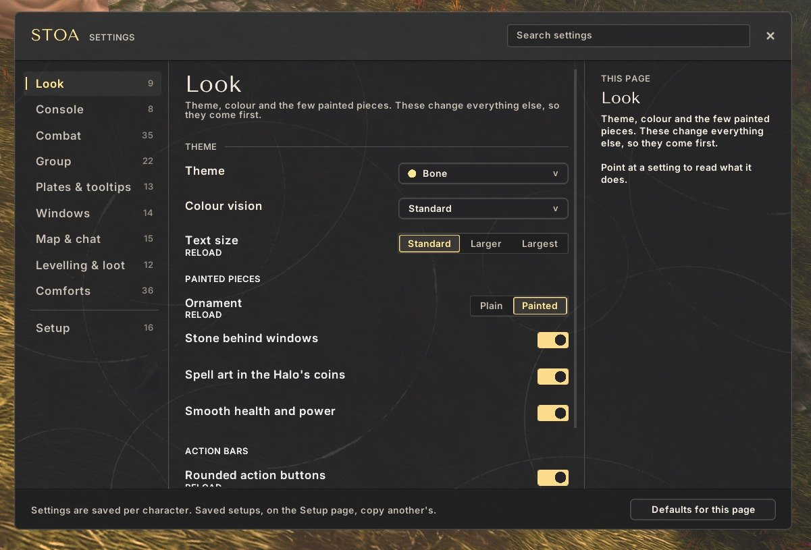

STOA gives your screen two states. Out of combat a leather console along the bottom holds chat, your group, the minimap and notes. When a fight starts it folds away and the Halo rises around your character.
Best on an ultrawide (21:9). Fits 16:9 and 16:10 too.

In the world: the console along the bottom, with At a glance, Ready, Journey and Company.
Two states
World state
The Console is open along the bottom: black leather and brass, with chat, party, minimap and notes.
Combat state
The console folds down flat and the Halo rises around your character: health and mana arcs, your spec's signature in the top slot, core buttons in a ring.
Layouts are built per role (Tank, Healer, Melee DPS, Ranged DPS), with a small spec signature on top. Changing spec swaps the layout automatically.

In combat: the console folds away and the Halo rises around your character.
Up close

The console up close.

Healing a group: party cards under the combat bar and a watch card for the tank.

Tooltips: a calm card with an upgrade line against what you wear.

Training: what you can learn now and what comes next, with prices.

Settings: every option on one searchable page, with a note on what each does.
STOA does a lot, so it helps to say what it leaves alone. These are decisions, not gaps.
Not a damage meter. Blizzard's meters are restyled, never replaced.
Not a boss mod. No timers for encounters, no warnings read from the combat log. STOA shows what the game shows you.
Not a top bar. At a glance holds a few chosen numbers beside the chat; there is no row of modules along the top of the screen.
Not an auction or trade tool. Prices, scans and crafting queues belong to addons made for them.
Not an icon wall. Buffs, procs and cooldowns are words, coins and the game's own art, never a grid of timers.
Not a replacement for Edit Mode or the game menu. The menu and the settings panel keep their own look, and Blizzard's own frames keep their jobs.
Not green against red. Every state carries a word or a shape as well as a colour.
Not loud. Nothing flashes, bounces or plays a sound of its own; procs use the game's own art and sound, and that can be turned off. If a feature cannot be quiet, it is left out.
Try it
Install from the CurseForge app, or unpack the release zip into _forever_\Interface\AddOns. Restart the game the first time. Install notes